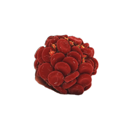
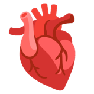

Per funzionare ogni macchina, e quindi anche l'uomo, ha bisogno di carburante da cui riceve energia e ha bisogno di eliminare le sostanze di scarto. Ovviamente anche tutte le cellule del nostro organismo hanno bisogno di sostanze nutritive ed ossigeno e devono eliminare le sostanze di rifiuto. Tutto ciò è svolto dall'apparato circolatorio.
L'apparato cardiocircolatorio è formato da:

Il Sangue

I Vasi Sanguigni

Il Cuore